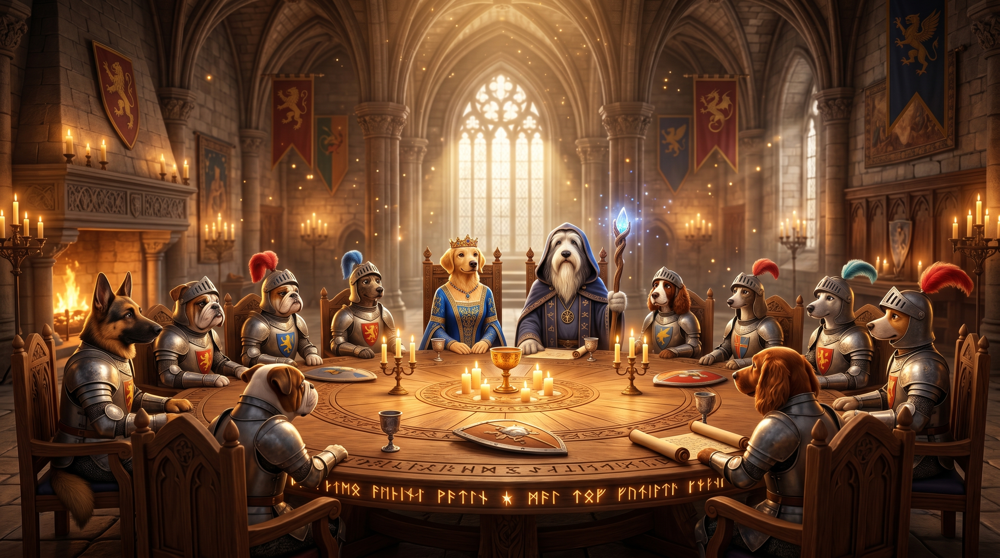

A 7-step AI pipeline with a 100% free core: UI UX Pro Max,
Nano Banana 2 (free via infsh), WebFetch, and
hand-crafted Tailwind code. No API keys needed to get started.
Paid MCPs are optional enhancements only.
Each step is a dedicated tool. The free path is primary — optional paid MCPs enhance but never gate the output.
Get a complete, animated website in 3 steps — no API keys, no paid accounts, no setup beyond Claude Code and infsh.
infsh (Gemini 3.1 Flash Image)Everything you need, nothing you don't.
Get the pipeline + UI UX Pro Max skill — all bundled, free.
git clone https://github.com/ ANIS151993/ Animated-Website-skill.git cd Animated-Website-skill
Free Nano Banana 2 image generation. One command to install and login.
curl -fsSL \ https://cli.inference.sh | sh infsh login
Open Claude Code in the cloned folder and fire the command.
/animated-website # Claude asks for your brief. # Type it and press Enter.
Want Stitch, Magic, or Firecrawl? Follow the full setup below.
Full optional setup guide12 steps to wire up Stitch, Magic, and Firecrawl for the enhanced experience. Skip this if you only need the free core.
Click each item as you confirm it works.
Optional items do not affect this count.
A clean path from brief to shipped site.
One sentence. Name the product, the audience, and the primary CTA. Vague in, vague out.
"Landing page for a GPU cost monitor targeting ML engineers; CTA = book demo."
Inside Claude Code, type the slash command with your brief.
/animated-website
Claude drafts sections, palette, and motion language. Reply go to proceed.
Serve the generated index.html locally.
python3 -m http.server 8000
# open http://localhost:8000
A King-Arthur-themed dog cafe — twelve knight-pup brand identity, Saxon-brews menu, Pixar-3D hero, adoption gallery, and a live map to Camelot. Generated from one short brief.

Animated "Dog Café Camelot" Website
Create a visually rich, animated website for a fantasy-themed Dog Café inspired by the legend of Camelot.
A cinematic background inspired by the Round Table of Camelot. Around the table, stylized 3D Pixar-like dogs representing the Twelve Knights, along with characters inspired by Lady Guinevere and Merlin. Subtle animations: floating particles, glowing candles, gentle character movements.
A "Brews of Camelot" section featuring fictional drinks inspired by Saxon-era beverages like mead and herbal infusions — magical legendary drinks with playful names, animated icons, and hover effects.
Testimonials from dog owners as stylized 3D Pixar-like characters alongside their dogs, with light animations: blinking, tail wagging, speech bubbles.
Interactive gallery of adoptable dogs in 3D Pixar style. Each card: dog image, name and short story, "Adopt Me" button with hover animation. Filters by age, breed, and temperament with smooth transitions.
A fantasy map pointing to Camelot in England with animated map markers, a contact form, and café details (hours, email, etc.).
Clone the repo, install infsh, and run /animated-website. No API keys needed to get started.
Researcher, engineer, and the author of the Animated-Website-skill pipeline. Find me across the web: